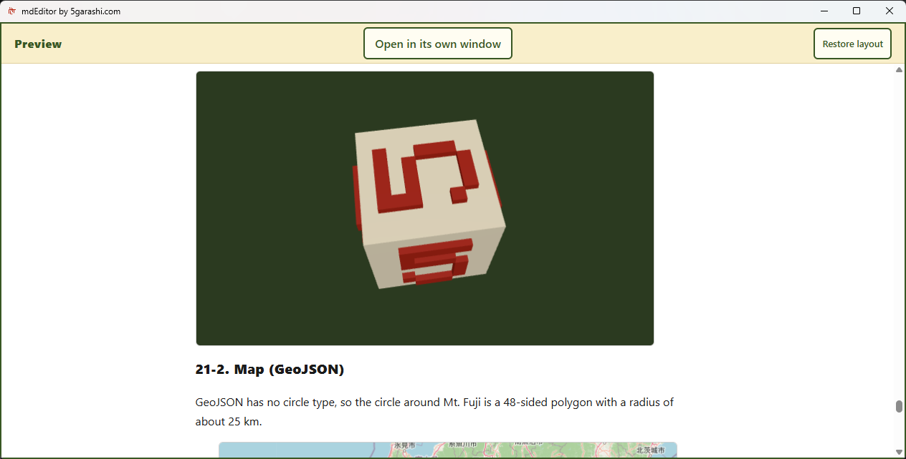

One Markdown. A visual world.
Begin with a top-to-bottom tour of diagram-test.en.md. Explore diagrams, zoom and rotate 3D, and load maps and video. Then follow the new features and real editing and saving operations.
Real recordings use source build 1.0.12. The current Store build number is unverified.
MP4PDFExplore, then learn

- Rotate 3D by dragging; zoom with the wheel
- GitHub-style alerts, math, HTML and YAML cards
- Load maps and video inside your document
- Import Word; export Word, PDF, HTML and PNG
Current guideMicrosoft StoreRecording notes
Internet loading was allowed for this recording. Word import does not preserve colors or layout. Diagrams and equations export to Word as images. No automatic numerical calculation.